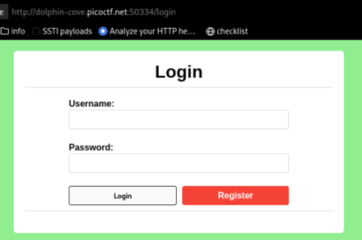
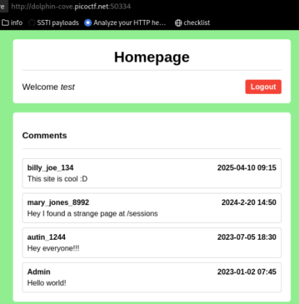

Old Sessions
- Provided with a website and information hint that there are permanent sessions:

- Made account using test test test credentials
- Infomormation related to broken access control:

- Found permanent admin session: Ajv22Pj3H99rnurQXF7o_BY6cJjgWz09248LaNi8tJE</body></html>
- Replaced session cookie value for test with admin session value
- Refreshed page to get cookie: picoCTF{s3t_s3ss10n_3xp1rat10n5_11cae9aa}